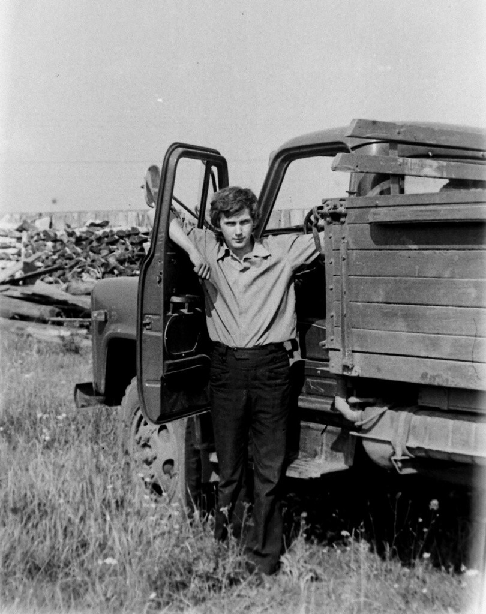
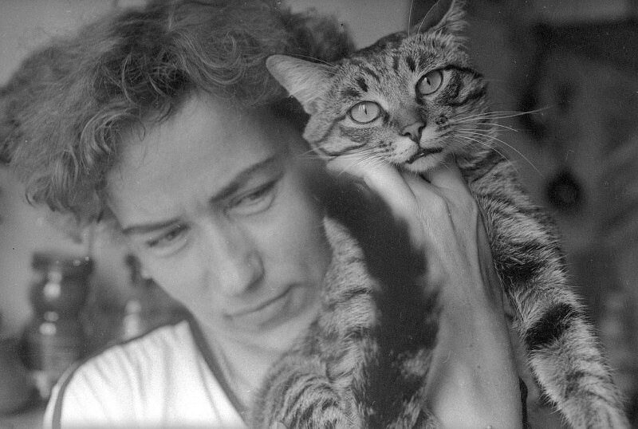
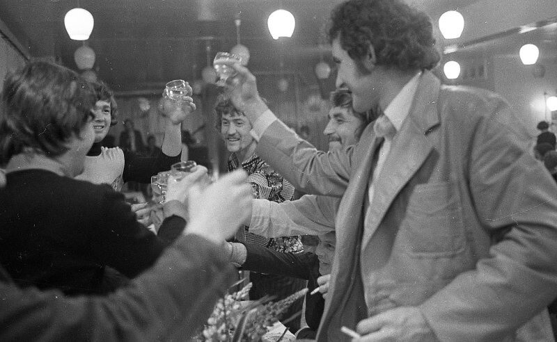
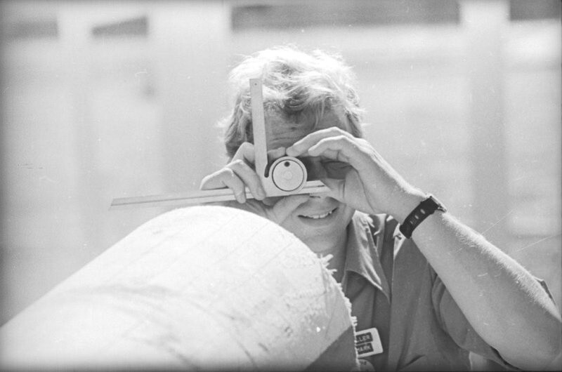
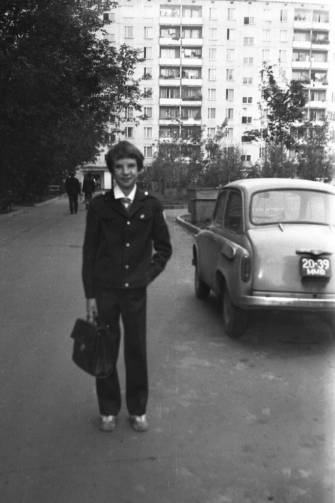
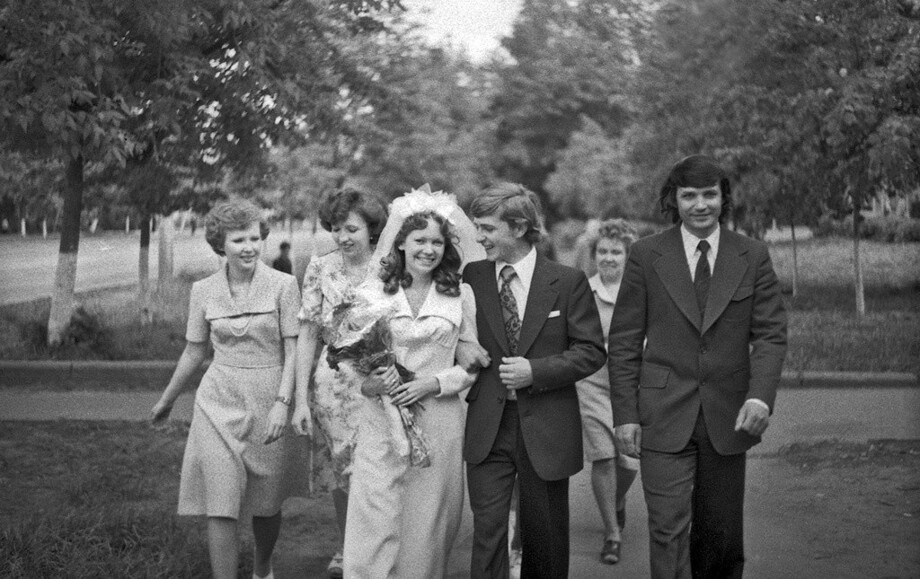
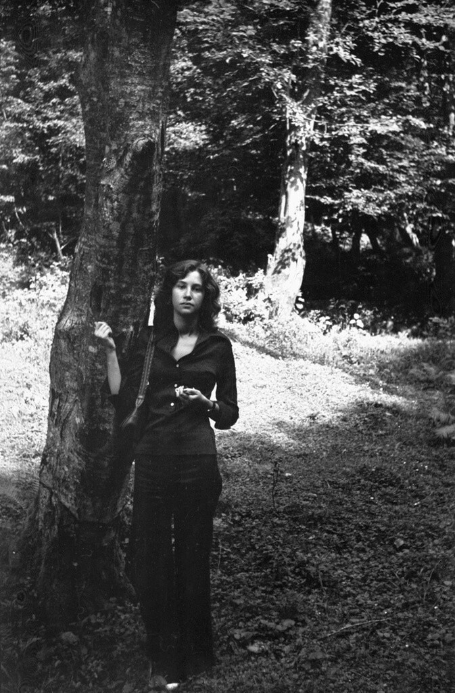
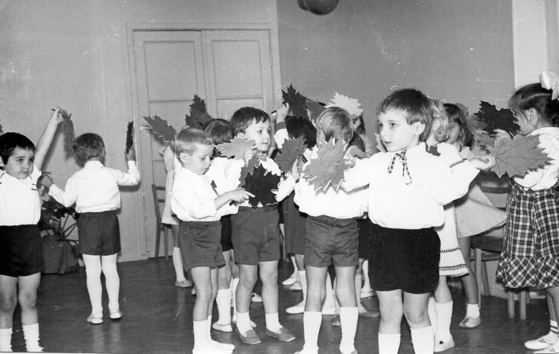

„W życiu nie chodzi o to, by przeczekać burzę, ale o to, by nauczyć się tańczyć w deszczu. Zostawiajmy po sobie to, co będzie służyć ludziom i ogrzewać ich serca.”
Biografia
Andrzej Wiśniewski był wybitnym inżynierem budownictwa, architektem oraz kochającym mężem, ojcem i dziadkiem. Ponad czterdzieści lat swojego życia poświęcił na rewitalizację i odbudowę historycznych zabytków Warszawy, wnosząc nową energię w wiele zabytkowych kamienic i parków.
Urodził się wiosną 1954 roku. Od najmłodszych lat Andrzej wykazywał ogromне zainteresowanie projektowaniem i rysunkiem. Ukończył z wyróżnieniem Politechnikę Warszawską, przechodząc drogę od młodszego projektanta do głównego inżyniera kluczowych projektów miejskich. Koledzy zawsze cenili go za profesjonalizm, głęboką mądrość, oddanie pracy oraz szczerą życzliwość.
Poza pracą Andrzej był zapalonym podróżnikiem, kochał muzykę klasyczną, pasjonował się fotografią i spędzał mnóstwo czasu na łonie natury wraz z rodziną i wnukami, dzieląc się z nimi swoją miłością do otaczającego świata.
Kalendarium życia
Wspomnienie wideo
Archiwum zdjęć









